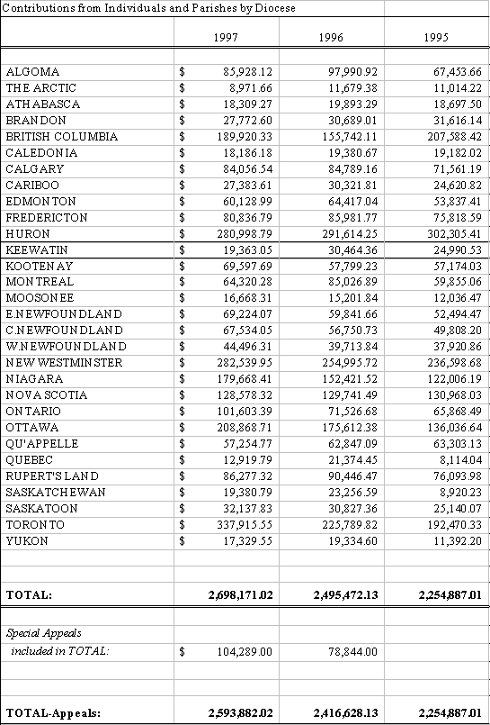

Primate’s World Relief & Development Fund
(Continued) Report to General Synod

The Full Report
Introduction
Partnerships with Parishes and Dioceses
Response to Disasters and Refugees
International Development
Financials:
Diocesan Contributions
Financials:
Balance Sheet